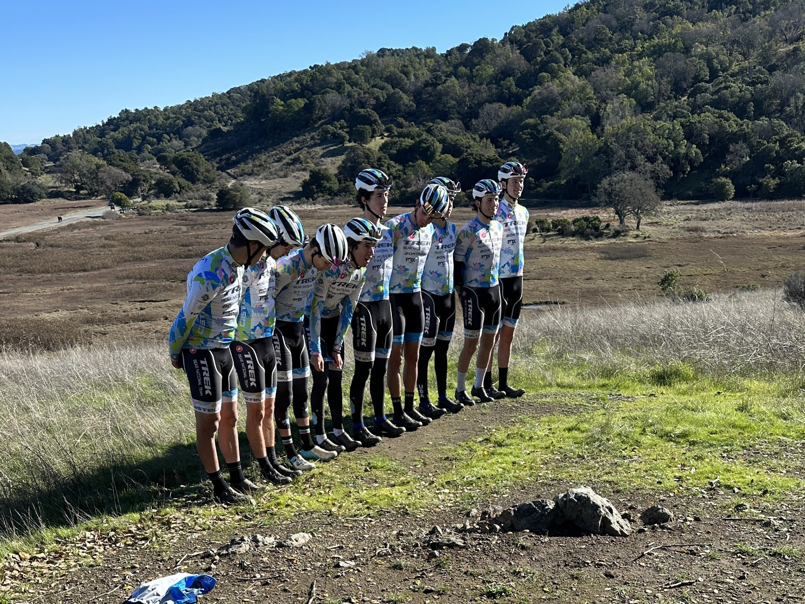
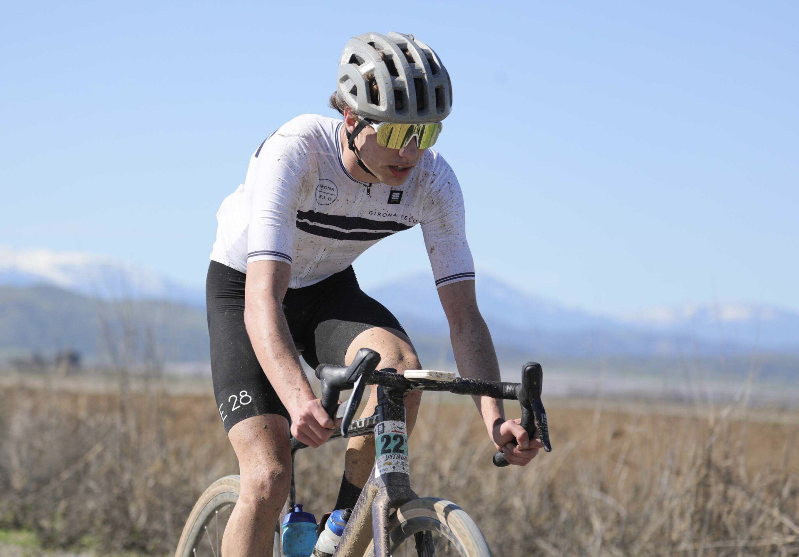

CV
Education
2026 - Present: Studying Software Engineering at VIA in Denmark.
2020 - 2024: Graduated from Sir Francis Drake High School in California.
Experience
2025: Completed a multi-month internship with Synergy Wetsuits in the warehouse and office as a Product Development Coordinator.
Professional Racing
2022 - Present: Raced professionally in the USA in gravel events and on the UCI Mountain Bike circuit, plus semi-pro road racing.
Certifications
UCI Racing License, First Aid Certified
Volunteer Work
Local trail maintenance and youth cycling coaching in Marin County.
Languages
English (Native), Danish (Beginner)
Photos

